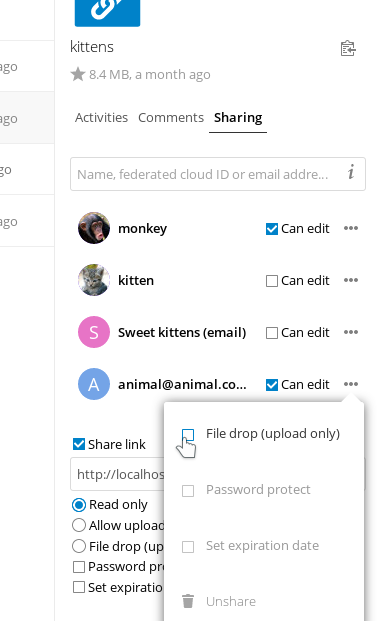

Quoi de neuf pour les utilisateurs de Nextcloud latest
Un moyen plus simple de sélectionner une nouvelle application:
Nouveau menu Contacts pour contacter vos collègues ou amis plus facilement:
Une fenêtre flottante sur tous les avatars:
Possibilité d’envoyer plusieurs liens de partage uniques, chacun avec ses propres paramètres, en saisissant plusieurs adresses de messagerie électroniques (le destinataire recevra un courrier électronique):

De nombreuses autres améliorations et nouvelles applications, telles que le partage d’écran dans les appels vidéo, la nouvelle application Circles pour les groupes définis par l’utilisateur, les notifications push, les notifications de modification de fichier; même lorsqu’elles sont partagées avec un autre serveur, l’annulation de la suppression des fichiers d’un dossier partagé; même si la suppression a été effectuée par un destinataire, partage avec divers médias sociaux et bien plus encore.